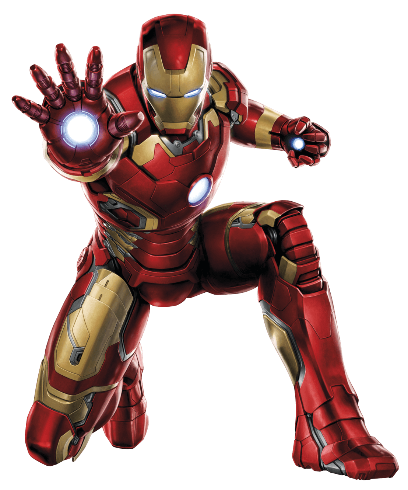

Anthony Edward « Tony » Stark est un industriel américain, originaire de Long Island dans l'État de New York, fils de Howard Stark, scientifique alcoolique à la tête de Stark International, et de sa femme Maria Collins Carbonell Stark.

Avec l'entreprise que son père lui a légué, il travaille à la fabrication d'armes pour le gouvernement américain. Cette activité amène le playboy, dont le physique rappelle Clark Gable, à se rendre au Viêt Nam, alors que ce pays est en guerre contre les États-Unis, pour démontrer la puissance d'une de ses nouvelles inventions de l'époque : les « transistors », des machines qui sont capables de décupler la puissance de n'importe quelle arme. Malheureusement, il saute accidentellement sur une mine qui projette des éclats de métal près de son cœur.
Capturé par les soldats vietnamiens, il est obligé par leur chef à fabriquer des armes avec l'aide d'un scientifique asiatique, le professeur Yinsen, lui aussi prisonnier. Conscients de la mort imminente de Tony Stark en raison des éclats présents dans son thorax, ils décident de mettre au point un dispositif destiné à ralentir leur progression dans le corps de l'industriel : une armure, équipée de transistors.
Lors de leur évasion, le professeur Yinsen est tué par une balle perdue. Une fois habitué à son nouveau corps, Iron Man se débarrasse facilement de ses adversaires et s'enfuit.
Iron Man commença à se faire une réputation, devenant l’un des principaux super-héros des États-Unis.